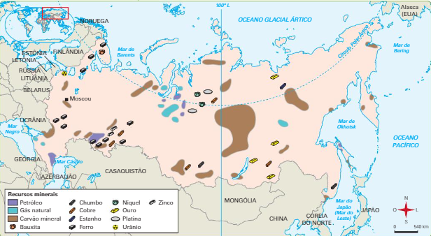

Feito por: Mateus Gonçalves, Amanda, João Pedro, Felipe Andrade, Felipe Valim, Gabriel Batarra e Miguel Pádua
Vire o celular
Rússia:
Aspectos Econômicos
Agricultura
A Rússia é uma das maiores produtoras de grãos do mundo. Os produtos mais produzidos são trigos, centeio, aveia, cevada, milho, batata, vegetais, beterraba açucareira, linho e algodão, sendo famosa também pela produção de vodca. Ela tem uma gama de climas que variam de subártico no Norte a temperado no centro e árido no sul. Isso influencia nos tipos de culturas que podem ser cultivadas em diferentes regiões. As regiões mais férteis estão no sul, como a região do Cáucaso do Norte e a Ucrânia Ocidental.
A agricultura na Rússia enfrenta vários desafios, incluindo variações climáticas extremas, infraestrutura e tecnologia inadequadas, problemas relacionados à propriedade da terra e à vastidão territorial, o que limitam o crescimento do setor. Por isso, grandes áreas são incultiváveis, e as restrições impostas pelo clima severo forçam a Rússia a ser parcialmente dependente de grãos importados. É exportado uma variedade de produtos agrícolas para outros países, incluindo grãos, carne e lácteos, desempenhando um papel importante na economia russa.
Pecuária
A pecuária, incluindo a criação de gado, ovinos e aves, é uma parte significativa da economia russa, desempenhando um papel significativo na economia e produção de alimentos do país e é um dos maiores produtores mundiais. As vastas pastagens da Sibéria e outras regiões permitem a criação extensiva de animais. No entanto, a eficiência da produção muitas vezes é baixa devido à falta de investimentos em tecnologia e infraestrutura.
O grande território russo permite criação de gado em diversos lugares, embora o clima rigoroso possa ser um problema, existem áreas mais quentes e adequadas ao sul. O país também é um grande exportador de carne, especialmente para países vizinhos e mercados internacionais.
Recursos Energéticos
A Rússia é o principal exportador e segundo maior produtor de gás natural do mundo, bem como o segundo maior exportador e terceiro maior produtor de petróleo. Mais do que isso, desde o final da União Soviética, o Estado russo soube de forma muito hábil converter sua pujança energética numa ferramenta para expandir sua influência no cenário global.
O país é o maior exportador de energia e, em alguns momentos da história, foi o maior produtor de petróleo. A Rússia detém a maior reserva de gás e a sétima maior reserva de petróleo. Isso já justifica uma atenção especial à sua experiência. Empresas como a Gazprom e a Rosneft desempenham um papel fundamental nesse setor de energia.
No que diz respeito à posição geográfica, é importante lembrar que o país se situa entre dois grandes mercados compradores de energia: a União Europeia (UE) e os asiáticos (China, Japão e Índia).
A Rússia se destaca no cenário mundial por conta da produção de petróleo e da exportação de gás natural. A venda desses combustíveis fósseis tem contribuído para a retomada da economia russa e para a reconstrução de seu poderio militar nas últimas duas décadas, período no qual Putin se consolidou na presidência.Os países europeus estão entre os maiores importadores de combustíveis fósseis russos. O destaque é o gás natural, muito importante para geração de eletricidade, funcionamento das fábricas e sistemas de calefação, fundamentais no inverno rigoroso do continente.
Indústria
A indústria na Rússia é diversificada e inclui setores como manufatura, mineração, metalurgia, engenharia e construção naval. A indústria de defesa também tem uma presença significativa. A herança industrial da era soviética deixou um legado de infraestrutura pesada, mas muitas vezes desatualizada. O país tem feito esforços para modernizar suas indústrias e atrair investimentos estrangeiros, mas ainda há desafios em termos de burocracia e corrupção.

A indústria do petróleo na Rússia é uma das maiores do mundo. A Rússia tem as maiores reservas e é o maior exportador de gás natural. A Rússia possui a segunda maior reserva de carvão, a sexta maior reserva de petróleo e é um dos maiores produtores de petróleo.
Produção de Petróleo: A Rússia é um dos maiores produtores de petróleo do mundo. Ela possui vastas reservas de petróleo em seu território, principalmente na região da Sibéria. Grandes empresas estatais, como a Rosneft e a Gazprom Neft, bem como algumas empresas privadas, desempenham um papel crucial na exploração, extração e produção de petróleo no país. A produção de petróleo na Rússia tem oscilado ao longo dos anos devido a fatores como flutuações nos preços do petróleo e questões geopolíticas.
Exportação de Petróleo: A exportação de petróleo é uma fonte significativa de receita para a Rússia. O país exporta petróleo bruto para diversos destinos, incluindo países europeus, como Alemanha e Holanda, bem como para a Ásia, especialmente China e Japão. Os oleodutos desempenham um papel fundamental na infraestrutura de exportação, com o oleoduto Druzhba sendo um dos principais responsáveis pelo transporte de petróleo russo para a Europa.
Produção de Gás Natural: A Rússia possui as maiores reservas de gás natural do mundo. A empresa estatal Gazprom é uma das principais produtoras de gás natural e controla grande parte da produção do país. O campo de gás de Yamal, na Península de Yamal, é uma das importantes fontes de produção de gás. A Rússia também está envolvida em projetos de gás natural liquefeito (GNL), permitindo o transporte do gás natural para mercados globais.
Exportação de Gás Natural: A exportação de gás natural é outra parte crucial da economia russa. A Gazprom é um ator central nesse cenário, fornecendo gás para a Europa, que é um dos maiores mercados consumidores de gás natural. O gasoduto Nord Stream, que transporta gás natural da Rússia para a Europa, é um exemplo proeminente de infraestrutura de exportação. Além disso, a Rússia tem expandido seus esforços para exportar GNL para mercados asiáticos e outros.
Indústria Aeroespacial: A Rússia tem uma longa tradição na indústria aeroespacial, produzindo foguetes, satélites e aeronaves, além de ser o lar da agência espacial Roscosmos.
Indústria de Defesa: A Rússia tem uma indústria de defesa robusta, produzindo uma variedade de equipamentos militares, incluindo tanques, aeronaves e sistemas de mísseis.
Indústria Automobilística: A Rússia tem sua própria indústria automobilística, com empresas como a AvtoVAZ (fabricante do Lada) e várias montadoras estrangeiras que têm presença no mercado russo.
População
A Rússia tem uma população relativamente grande, porém está enfrentando um problema de envelhecimento demográfico e diminuição da população devido a uma baixa taxa de natalidade e emigração. Isso tem implicações para a força de trabalho e a sustentabilidade dos sistemas de seguridade social. Além disso, a população russa está geograficamente dispersa, com uma concentração significativa nas áreas ocidentais, enquanto vastas regiões como a Sibéria têm densidade populacional baixa.
Conflitos
Guerra Napoleônica (1812): A Rússia enfrentou a invasão das forças de Napoleão Bonaparte, que resultou em uma retirada catastrófica das tropas francesas em meio ao rigoroso inverno russo.
A Primeira Guerra Mundial (1914 a 1918): foi um conflito global envolvendo as principais potências europeias. Iniciada após o assassinato do arquiduque Francisco Ferdinando da Áustria, a guerra se expandiu rapidamente com alianças complexas. As trincheiras e táticas de guerra modernas causaram enorme sofrimento e morte. O conflito resultou na queda de impérios, mudanças territoriais significativas e, em 1919, no Tratado de Versalhes, que impôs pesadas reparações à Alemanha, semeando sementes para futuros conflitos.
Revolução Russa (1917-1923): Uma série de conflitos, incluindo a Revolução de Fevereiro e a Revolução de Outubro, levaram à queda da monarquia e à ascensão do governo comunista liderado pelos bolcheviques, que eventualmente resultou na formação da União Soviética.
Segunda Guerra Mundial (1939-1945): A União Soviética, que incluía a Rússia, foi invadida pela Alemanha Nazista em 1941, levando à Frente Oriental da guerra. As batalhas na Frente Oriental foram algumas das mais brutais e mortais da história.
Guerra Fria (1947 - 1991): foi um conflito geopolítico e ideológico entre os Estados Unidos e seus aliados ocidentais e a União Soviética com seus aliados do bloco oriental, que durou aproximadamente de 1947 a 1991. Caracterizada pela rivalidade, corrida armamentista e confronto indireto, a Guerra Fria não envolveu combates diretos entre as superpotências, mas resultou na divisão do mundo em blocos, com disputas ideológicas e competição por influência global, culminando na queda da União Soviética e no fim do confronto.
Guerra Russo-Georgiana (2008): A Rússia e a Geórgia entraram em conflito devido à região separatista da Ossétia do Sul. O conflito durou poucos dias, mas teve impactos significativos nas relações regionais.
Anexação da Crimeia (2014): A Rússia anexou a península da Crimeia após a crise política na Ucrânia. Isso levou a tensões entre a Rússia e países ocidentais, que não reconheceram a anexação.
Guerra Civil Síria (desde 2011): Embora não seja um ator inicial, a Rússia se envolveu na guerra civil síria em apoio ao governo de Bashar al-Assad, alterando significativamente o curso do conflito.
Conflito Russo-Ucraniano (desde 2014): O conflito na Ucrânia, iniciado em 2014, envolve confrontos entre forças ucranianas e separatistas apoiados pela Rússia no leste do país. A anexação da Crimeia pela Rússia e a busca pela independência de regiões como Donetsk e Luhansk têm causado tensões geopolíticas e humanitárias, resultando em um impasse duradouro e esforços diplomáticos para alcançar uma resolução pacífica. A situação continua evoluindo e demanda atenção internacional devido às suas implicações regionais e globais.